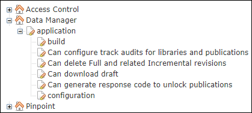

The control of permissions (who can do what) in Data Manager is managed in Access Control Manager ( ). The Access Control Manager administrator grants
permissions to the different user roles/organizations that can access functions in the Data
Manager. The administrator grants permissions to user groups, which allows members of a
group access to the data.
). The Access Control Manager administrator grants
permissions to the different user roles/organizations that can access functions in the Data
Manager. The administrator grants permissions to user groups, which allows members of a
group access to the data.
For a description of how to grant permissions to user roles/organizations, refer to Manage Function Privileges and Data Access Permissions.
Read, Write, and Delete permissions can be granted for the nodes below the Data Manager privilege tree.

Data Manager Privilege Tree
The table below describes the privilege tree and effect of assigning Read, Write, and Delete permissions to each of the nodes.
| Node (Top Level > Sub Levels) | Description |
|---|---|
| (user roles / organizations) |
Grant users the appropriate permissions for the Data Manager application:
|
| (user roles / organizations) |
Important: The user role that contains the "application user" must
have full
(Read/Write/Delete)
permissions on the Build node (refer to the definition of
"application user" below). This is required in order to make builders and
publishing available. For user groups that contain regular end-users, the
Build node is not relevant.
The application user is pre-defined in a configuration file (dm_config.properties) on the server and is required for communicating with the other Pinpoint applications (Access Control Manager and Builders). In dm-config.properties, this user is defined in the parameter acm.username. Important: Permission for the Build node only
applies to the group that contains the application user.
|
| (user roles / organizations) | Grant full
(Read/Write/Delete)
permission to allow users to configure the track audits functionality. Users with Read permissions only can view the Track Audits option but cannot change the value. |
| (user roles / organizations) | This resource is used by the Pinpoint Application User to delete full and
incremental revisions from Data Manager. The user role that contains the
"application user" must have full
(Read/Write/Delete)
permissions to delete revisions. Note: If the user role does not have the
Delete permission, the Delete icon
does not display.
When you select a full revision to delete, the related incremental revisions are also selected. Note: The latest full released
revision does not have the option to be deleted.
|
| (user roles / organizations) | Note: This resource is only relevant if you are using the A350
Builder.
This resource is used by the Pinpoint Application User to download
publications from Data Manager (using the A350 builder) to Pinpoint. You will need
Read permissions to that resource to be able to download
draft revisions. |
| (user roles / organizations) |
Grant full (Read/WriteDelete) permissions to allow an administrator to generate a response code using a challenge code provided by a user. This response code is then provided to the user to unlock a publication. |
| (user roles / organizations) |
Grant the appropriate permissions for the Configuration panel:
|
| (user groups / organizations) |
Grant the appropriate permissions to data and sub-nodes:
Tip: The permissions must be applied to each of the sub-nodes if the
user can access all the content. To quickly assign a user to the full set of
permissions for all the data you can select all permission types for the Data node
and then activate the Apply to descendants check
box.
|